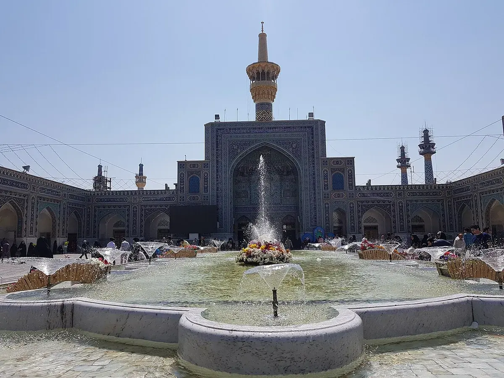

فنادق مشهد القريبة من حرم الإمام الرضا: مقارنة الحجوزات حسب الشارع والميزانية

الإجابة المختصرة
عند التخطيط لخيارات الإقامة في مشهد والبحث عن فنادق مشهد أو المفاضلة بين فنادق في مشهد (ضمن أبرز ما يبحث عنه الزوار تحت مسميات فنادق ايران أو فنادق ايران مشهد) لإتمام حجز فندق في مشهد أو حجز فنادق مشهد ومراجعة حجوزات فنادق مشهد، ابدأ بتحديد مدخل الحرم المناسب لعائلتك. وسواء كنت تبحث عن فنادق خمس نجوم في مشهد أو فنادق فخمة في مشهد أو تقارن بين فنادق رخيصة وأرخص فنادق مشهد للعثور على فندق قريب من حرم الإمام الرضا، فالمقارنة الصحيحة تقوم على مسار المشي الفعلي عبر الشوارع الأربعة (الإمام الرضا، شيرازي، بهجت، طبرسي، ونواب صفوي) ومراجعة دليل بوابات الحرم. ولا توجد خصومات فنادق مشهد ثابتة أو مضمونة؛ إذ قد تتاح أحياناً في الفترات الهادئة خارج مواسم الذروة فرصة التفاوض على خصم غير مضمون يصل إلى ٢٠٪ من السعر القياسي بحسب موافقة الفندق ونسبة الإشغال، بينما ترتفع أسعار الفنادق في مشهد وتضيق هوامش الخصم أو تنعدم في الأعياد والمناسبات الدينية.
اختيار فندق في مشهد أو تقييم افضل فنادق مشهد وفنادق قريبة من حرم الإمام الرضا قرار عملي يتأثر بمدخل الحرم الذي ستستخدمه، وميزانيتك، وأفراد الأسرة، واحتياجات الحركة؛ إذ تختلف حاجة الباحث عن فندق مشهد لليلة عمل عابرة عن حاجة أسرة تبحث عن حجز فندق قريب من الحرم لعدة أيام. تعرض هذه الصفحة مقارنة مرجعية لأبرز الفنادق والشقق الفندقية، مع فلاتر مباشرة حسب الشارع والفئة.
تصفح حسب الشارع ونوع الإقامة
يعرض جميع الفنادق والشقق الفندقية للمقارنة.
فندق قصر الدولي (غرف رويال)
إمام رضا ١٤–١٦؛ أجنحة عرسان ورويال بأسعار موسمية متغيرة دون خصم مضمون.
استعرض الصور والتفاصيل ↙فندق درويشي الملكي
إمام رضا ٢٤–٢٦؛ أجنحة متعددة وأتريوم مع خدمة نقل للحرم.
اقرأ الدليل ↙فندق قصر طلايي (القصر الذهبي)
ميدان بسيج وإمام رضا ٣٤–٣٦؛ أجنحة فاخرة وتفادي خلط الأسماء.
اقرأ الدليل ↙فندقا ألماس ١ وألماس ٢
مقارنة الموقع بين بداية الشارع وإمام رضا ٢٠ مع توصيل الحرم.
اقرأ الدليل ↙فندق مدينة الرضا (شارع شيرازي)
أقرب الفنادق المصنفة ٥ نجوم إلى مدخل شيرازي وصحن الجمهورية.
اقرأ الدليل ↙شقق بشرى ومجمعات آرمان ونرجس
شقق فندقية ومفروشة للعائلات في محور نواب صفوي وباب الجواد.
اقرأ الدليل ↙دليل الشقق المفروشة العائلية
مقارنة السعر والخصوصية وفحص الشقة والمصعد قبل العربون.
اقرأ الدليل ↙فنادق وأجنحة شهر العسل والأزواج
إقامة خاصة للعرسان بين غرف رويال وأجنحة الجاكوزي بمشهد.
اقرأ الدليل ↙١. فندق مدينة الرضا
يعرض الموقع الرسمي الفندق في شارع شيرازي. وتذكر منصة eTours مسافات منشورة مختلفة بحسب المدخل: نحو ٨٣ متراً إلى مدخل شارع شيرازي، و٨٣٨ متراً إلى باب الجواد، و٩٩٦ متراً إلى باب الرضا، ونحو ١٬١٩٧ متراً إلى مدخل الشيخ الطبرسي. هذه أرقام منشورة لدى منصة حجز وليست قياساً ميدانياً لمسار المشي؛ وهي توضح أن وصف الفندق بأنه قريب لا يعني القرب نفسه من كل بوابة. راجع الصفحة التفصيلية في دليل فندق مدينة الرضا في شارع شيرازي.
الموقع الرسمي لفندق مدينة الرضا · الغرف والأجنحة
مناسب للمقارنة إذا كانت الأولوية لديك هي الإقامة الفندقية ذات الخدمات المتعددة والقرب من جهة شارع شيرازي. اسأل عن نوع الغرفة، وما إذا كان النقل أو الوجبات ضمن السعر، وعن سياسة الإلغاء.
٢. فندق قصر الضيافة قدس
تضعه منصة Travela360 في بداية شارع شيرازي مقابل دار الشفاء، وتذكر أن الوصول مشياً إلى صحن الجمهورية وباب الجواد يستغرق أقل من ٨ دقائق. هذا تقدير منشور من منصة حجز، ولا يثبت زمن الوصول إلى بقية الأبواب أو في أوقات الازدحام. قارن المسار إلى البوابة التي ستستخدمها فعلاً، وتحقق من نقطة إنزال السيارة.
تفاصيل الموقع والمسارات المنشورة على Travela360
تحقق من توافر الغرف وتفاصيل الحجز، واسأل عن الضوضاء وأوقات الوجبات وسياسة التعديل أو الإلغاء، خصوصاً في المواسم المزدحمة.
٣. فندق هليا
تذكر منصة إقامة۲۴ عنوان الفندق في شارع الإمام رضا، الإمام رضا ٨، وتعرضه ضمن الفنادق الثلاث نجوم. كما تعرض المنصة مرافق منها المصعد والاستقبال على مدار الساعة، وتذكر مسافة منشورة تقارب ٨٣٠ متراً إلى مدخل باب الرضا؛ تحقق من المسار الفعلي قبل اتخاذ القرار.
تفاصيل فندق هليا على إقامة۲۴ · عرض الموقع على الخريطة
قد يكون خياراً للمقارنة لمن يريد مراجعة إقامة في شارع الإمام رضا، لكن لا تعتمد على التصنيف أو المسافة وحدهما؛ افحص صور الغرفة الحديثة والمرافق الفعلية وشروط الحجز.
خيارات إضافية تستحق المقارنة
من الخيارات المعروفة في نطاق شارع الإمام رضا: فندق قصر الدولي مشهد (Ghasr International) بين إمام رضا ١٤ و١٦ للمسافرين الباحثين عن غرف رويال وأجنحة فاخرة للعرسان ورجال الأعمال (مع بدائل متوسطة واقتصادية وشقق مفروشة عند الطلب)، وفندق جواد وروز درويشي قرب المقاطع الأولى من الشارع، وألماس ١ وألماس ٢ (إمام رضا ٢ و٢٠) وفندق درويشي الملكي (إمام رضا ٢٤–٢٦). أما القصر الذهبي (قصر طلايي) فيقع أبعد باتجاه ميدان بسيج؛ لذلك لا تخلط بينه وبين فندق قصر الدولي.
وفي جهة شيرازي وباب الجواد، قارن إلى جانب مدينة الرضا وقصر الضيافة قدس كلاً من فندق توس وفندق صحرا ونيغين باسارغاد، إضافة إلى شقق بشرى ومجمعات نواب صفوي الفندقية للعائلات. كما يمكن النظر إلى أطلس وأتراك في نطاق ميدان بيت المقدس.
راجع قائمة الفنادق القريبة من الحرم على Tripadvisor، ثم تحقق من المعلومات لدى الفندق نفسه.
جدول مقارنة سريع
أدرجنا خيارات في شوارع مختلفة لتسهيل المقارنة، مع تفعيل أزرار التصفية في أعلى الصفحة لتصفية الجدول مباشرة حسب الشارع أو الفئة:
| الفندق | الشارع / المنطقة | المسار والمدخل وفق المعلومات المنشورة | الفئة | ما ينبغي التحقق منه |
|---|---|---|---|---|
| مدينة الرضا | شارع شيرازي، قرب شيرازي ٢–٤ | منشور لدى eTours: ٨٣ م إلى مدخل شيرازي؛ ٨٣٨ م إلى باب الجواد؛ ٩٩٦ م إلى باب الرضا؛ ١٬١٩٧ م إلى مدخل الشيخ الطبرسي. | ٥ نجوم | السعر النهائي، الإلغاء، الإفطار، النقل |
| قصر الضيافة قدس | بداية شارع شيرازي / جوار نطاق الحرم | تقدير منشور: أقل من ٨ دقائق مشياً إلى صحن الجمهورية وباب الجواد؛ لا ينطبق بالضرورة على بقية الأبواب. | ٥ نجوم | السعر، شروط الدخول، الإفطار، الإلغاء |
| فندق توس | شارع شيرازي ٢ | شارع شيرازي؛ لم نعثر على تقدير منشور موثوق يحدد زمن المشي إلى بوابة بعينها. | ٤ نجوم | نوع الغرفة، الإفطار، سياسة الإلغاء، النقل |
| نيغين باسارغاد | شارع شيرازي، تقاطع شيرازي ٤ | جهة شارع شيرازي؛ تحقق من البوابة والمسار على الخريطة، ولا يتوفر هنا تقدير مشي موثق لبوابة محددة. | ٤ نجوم | السعر، الإفطار، المصعد، الإلغاء |
| هليا | شارع الإمام رضا ٨ | تذكر منصة إقامة۲۴ نحو ٨٣٠ م إلى باب الرضا؛ تحقق هل الرقم يمثل مسار المشي الحالي أم قياساً للمسافة فقط. | ٣ نجوم | مسار المشي، المصعد، الوجبات، الإلغاء |
| جواد | شارع الإمام رضا ٣ | شارع الإمام رضا؛ تحقق من مسار باب الرضا والبوابة المفتوحة، ولا نعتمد رقماً غير موثق هنا. | ٤ نجوم | السعر، الإفطار، النقل، الإلغاء |
| روز درويشي | شارع الإمام رضا، بين ١ و٣ | شارع الإمام رضا؛ تحقق من مسار باب الرضا والبوابة المفتوحة، ولا نعتمد رقماً غير موثق هنا. | ٣ نجوم | نوع الغرفة، الإفطار، المصعد، الإلغاء |
| أطلس | ميدان بيت المقدس | ميدان بيت المقدس؛ افحص الطريق إلى البوابة المفتوحة التي تناسب مسارك، دون افتراض زمن مشي ثابت. | ٣ نجوم | حالة الغرفة، الازدحام، الإفطار، الإلغاء |
| قصر الدولي (Ghasr International) | شارع الإمام الرضا، بين ١٤ و١٦ | النصف الأول من شارع الإمام الرضا؛ تحقق من المسار المفتوح إلى باب الرضا دون الخلط مع القصر الذهبي. | ٥ نجوم (فئة راقية / غرف رويال) | السعر اليومي، الخصم التفاوضي، وجود جاكوزي في فئة الغرفة، الإلغاء |
| درويشي الملكي | شارع الإمام الرضا، بين ٢٤ و٢٦ | مقطع أبعد من شارع الإمام الرضا؛ احسب المسار الفعلي أو استخدام خدمة التوصيل المجانية إلى الحرم. | ٥ نجوم | النقل إلى الحرم، السعر، الوجبات، الإلغاء |
| ألماس ١ | محور بداية شارع الإمام رضا | نطاق شارع الإمام رضا؛ تحقق من العنوان الدقيق ومسافة المشي الفعلية إلى باب الرضا دون افتراض رقم موحد. | فئة ٤ نجوم متداولة | السعر النهائي، حالة الغرف، الإفطار، الإلغاء |
| ألماس ٢ | شارع الإمام رضا ٢٠ | شارع الإمام رضا ٢٠؛ تحقق من المسار إلى باب الرضا، وتتوفر عادة خدمة نقل مجدولة للحرم. | ٥ نجوم | المسافة الفعلية، النقل، الإفطار، الإلغاء |
| فندق صحرا | محور شارع شيرازي | شارع شيرازي؛ تحقق من نقطة الدخول إلى صحن الجمهورية ومسافة المشي والمصعد على الخريطة قبل الحجز. | تحقق من التصنيف الحالي لدى الفندق | سعر الليلة، المصعد، الإفطار، الإلغاء |
| القصر الذهبي (قصر طلايي) | شارع الإمام الرضا، قرب ميدان بسيج وبين ٣٤ و٣٦ | باتجاه ميدان بسيج؛ احسب المسار أو خدمة النقل المجدولة من الفندق إلى الحرم. | ٥ نجوم | النقل، السعر النهائي، الوجبات، الإلغاء |
| شقق بشرى / نواب صفوي الفندقية | محور نواب صفوي وباب الجواد | جهات الشرق القريبة من باب الجواد؛ ملائمة للعائلات والباحثين عن شقة بمطبخ ومصعد. | شقق فندقية وضيافة | عدد الغرف، التكييف، المصعد، السعر الكلي |
| أتراك | ميدان بيت المقدس | ميدان بيت المقدس؛ افحص الطريق إلى البوابة المفتوحة التي تناسب مسارك، دون افتراض زمن مشي ثابت. | ٣ نجوم | التصنيف الحالي، المصعد، الإفطار، الإلغاء |
قد تختلف فئة الفندق بين الجهات والمنصات. والمسافة الخطية لا تساوي بالضرورة مسافة المشي؛ فقد يضطر الزائر إلى الالتفاف أو استخدام مدخل آخر. لكبار السن وذوي الحركة المحدودة، اسأل عن نقطة إنزال السيارة والدرج وطبيعة الرصيف، واختر البوابة وفق المسار الفعلي لا الرقم الأقصر وحده.
كيف تختار الفندق؟
الإجابة المختصرة: اختر وفق البوابة التي ستستخدمها، وقدرة أفراد الرحلة على المشي، والتكلفة النهائية لا سعر الليلة وحده.
- حدد أولاً هل تفضّل جهة شيرازي أم باب الرضا أم طبرسي، ثم افحص الطريق على الخريطة.
- للعائلة: تحقق من سعة الغرفة والأسرة وسياسة الأطفال والسرير الإضافي.
- لكبير السن أو محدود الحركة: اسأل عن المصعد والدرج والمنحدرات ومسافة المشي الفعلية وإمكانية إنزال السيارة.
- لإقامة اقتصادية: قارن السعر بعد إضافة النقل والوجبات والرسوم، لا سعر الغرفة فقط.
- قبل الدفع: اطلب تأكيداً مكتوباً للاسم والعنوان ونوع الغرفة والإفطار والإلغاء والنقل.
قائمة تحقق قبل دفع أي مبلغ
- أرسل تاريخ الوصول والمغادرة وعدد البالغين والأطفال وأعمارهم.
- اطلب السعر النهائي شاملاً الوجبات والرسوم، واطلب توضيح العملة.
- تحقق من اسم الفندق وعنوانه ورقم الحجز واسم الجهة التي تستلم الدفع.
- اقرأ شروط الإلغاء والتعديل والاسترداد قبل التحويل.
- إذا كان معك كبير سن أو شخص محدود الحركة، اسأل عن مسافة المشي الفعلية والمداخل والدرج والمصعد.
الفندق أم الشقة الفندقية؟
قد يناسب الفندق من يريد خدمات استقبال وتنظيفاً وفق نظام المنشأة، بينما قد تكون الشقة الفندقية خياراً للعائلة التي تحتاج مساحة أو ترتيبات معيشية مختلفة. لا يكفي اسم نوع الإقامة للحكم؛ راجع الخدمات الفعلية وشروطها، أو قارن عبر دليل شقق بشرى ومجمعات نواب صفوي.
اسأل عن عدد الأسرّة، وسعة الغرفة، والمصعد، وإمكانية الوصول، وسياسة الأطفال، وأي رسوم إضافية. اطلب تأكيداً مكتوباً للتفاصيل المهمة قبل الدفع.
كيف تقارن الموقع؟
لا تكتفِ بعبارة «قريب من الحرم». تحقق من عنوان المنشأة، والطريق الفعلي إلى المدخل الذي تفضله، وإمكانية الوصول سيراً على الأقدام، ومدى ملاءمة الطريق لكبار السن أو الأطفال.
إذا كانت لديك مواعيد علاجية أو تحتاج إلى سيارة، فوازن بين القرب من الحرم وسهولة التنقل إلى الوجهات الأخرى. موقع مثالي لشخص قد لا يكون الأفضل لأسرة مختلفة الاحتياجات.
شارع الإمام الرضا
يمتد شارع الإمام الرضا لمسافة طويلة؛ لذلك لا يكفي أن يذكر الفندق اسم الشارع. المقاطع الأقرب إلى بدايته، مثل الإمام رضا ١–٨، تكون عادة أنسب لمن يريد الوصول سيراً إلى جهة باب الرضا، بينما الفنادق الأبعد مثل أرقام ٢٠ و٢٤ و٣٤–٣٦ تحتاج إلى حساب وقت المشي أو ترتيب سيارة، خصوصاً مع الأطفال وكبار السن. اطلب رابط الموقع الدقيق لا اسم الشارع فقط.
هذا الشارع مناسب لمن يريد أيضاً الوصول إلى المتاجر والمطاعم والخدمات على امتداده، لكن قرب الفندق من باب الرضا لا يعني أنه الأقرب إلى مدخل شيرازي أو طبرسي.
شارعا شيرازي وبهجت وطبرسي
شارع شيرازي وشارع بهجت: يعد شارع شيرازي في مشهد عملياً لمن يضع سهولة الوصول إلى جهة مدخل شيرازي وصحن الجمهورية في مقدمة أولوياته، ولا سيما من يزور الحرم أكثر من مرة يومياً. كما يمتد شمالاً نطاق شارع بهجت في مشهد (محور آية الله بهجت وبداية بوابة الشيخ الطوسي وصحن الغدير) الذي يضم خيارات متعددة من الفنادق والشقق الفندقية القريبة من مركز المدينة مثل الشقق الفندقية في شوارع بهجت وشيرازي (كشقق نوين الفندقية وغيرها). وبسبب تداخل مسارات المشي والمرور قرب المداخل، تحقق من نقطة إنزال الأمتعة، والمصعد، وتحديث حالة الغرف في العرض المكتوب قبل الحجز.
شارع طبرسي: افحصه إذا كان مسار دخولك المعتاد من جهة طبرسي وصحن انقلاب أو كانت وجهاتك اليومية في تلك الناحية. لا تختَر فندقاً لمجرد وجوده في الشارع؛ اسأل عن البوابة التي ستستخدمها، والطريق المتاح، ووقت المشي الفعلي، وتوفر المصعد.
للعائلات وكبار السن والأفراد: فضّل الطريق الأقل ازدحاماً والأوضح، واطلب معرفة وجود درج أو منحدر ومسافة المشي من مدخل الفندق إلى السيارة ثم إلى بوابة الحرم. قد يكون فندق أبعد قليلاً مع نقل مؤكد أيسر من مسار قصير مزدحم. وللمسافرين بمفردهم أو ضمن رحلات الشباب، راجع ضوابط حجز الغرف الفردية والشبابية في فنادق مشهد.
مقارنة شوارع الإقامة الأربعة حول حرم الإمام الرضا
لتسهيل المفاضلة العملية بين محاور الإقامة دون الاعتماد على وصف «قريب» العام، يلخص الجدول الآتي خصائص المحاور الأربعة الرئيسية حول الحرم:
| محور الإقامة | مدخل الحرم الأقرب عادة | طبيعة الطريق والمواصلات | الأنسب لمَن؟ |
|---|---|---|---|
| شارع الإمام الرضا (الأرقام ١–١٠) | باب الرضا وصحن القدس | رصيف حيوي بالمتاجر والمطاعم؛ المقاطع البعيدة (٢٠+) تحتاج مواصلات. | من يريد الحركة الحيوية والوصول المباشر إلى باب الرضا أو خط المطار. |
| شارع شيرازي (الأرقام ١–٨) | بوابة شيرازي وصحن الجمهورية | مسار منظم يضم فنادق مصنفة؛ بعض النقاط تزدحم عند دخول السيارات. | العائلات وكبار السن الباحثون عن قرب هادئ نسبياً من صحن الجمهورية. |
| شارع طبرسي | بوابة الشيخ الطبرسي وصحن انقلاب | شريان نشط يضم نُزلاً وشققاً متنوعة وبوابات دخول شرقية/شمالية. | من يوازن بين السعر العملي والقرب من محور طبرسي والأسواق. |
| محور نواب صفوي | جهة نواب صفوي والصحون الشرقية | يتميز بكثرة المجمعات والشقق الفندقية وسهولة الوصول بالسيارة أحياناً. | العائلات والأفراد الباحثين عن مساحات أوسع مع مراجعة مسار البوابة المفتوحة. |
منطقة نواب صفوي ومناطق أخرى
استخدم العنوان الدقيق لتقييم الطريق اليومي إلى الحرم والمتاجر والنقل، واسأل عن إمكانية الوصول بالسيارة في أوقات الازدحام. لا تفترض أن الأقرب على الخريطة هو الأنسب إذا كان الطريق أو مدخل الفندق غير ملائم لاحتياجاتك.
متى يناسبك الفندق الاقتصادي؟
قد يناسب من يقضي معظم وقته خارج الغرفة ويحتاج إلى مكان نظيف ونوم مريح وموقع عملي. تحقق من مساحة الغرفة والحمام والتدفئة أو التبريد والنظافة والاستقبال والمصعد؛ فالسعر الأقل لا يضمن توافر كل خدمة.
متى تستحق الخدمات الإضافية؟
قد تكون المطاعم داخل الفندق أو الغرف الأوسع والخدمات الإضافية مفيدة للعائلات أو الإقامة الطويلة. اسأل إن كانت الوجبات والنقل والخدمات المذكورة داخلة في السعر أم تُحسب منفصلة.
أسعار الليلة الاسترشادية وتفاوت الأسعار الموسمية
نعتمد في التنسيق أسعاراً استرشادية تبدأ أقل من القوائم السياحية المبالغ فيها، مع الإشارة إلى تغيّر الأسعار يومياً وعدم وجود خصم ثابت؛ وقد تتاح أحياناً فرصة التفاوض على خصم غير مضمون قد يصل إلى ٢٠٪ في الفترات الهادئة خارج مواسم الذروة وفق الإشغال والتاريخ وموافقة الفندق، بينما تضيق هوامش الخصم أو تنعدم في مواسم الزيارة الكبرى (محرم وصفر والنوروز والأعياد). الأرقام الآتية نطاقات استرشادية للغرفة الواحدة في الليلة بالدولار الأمريكي:
| الفئة | نطاق الليلة الاسترشادي | تأثير الموسم والخصم |
|---|---|---|
| اقتصادي / 3 نجوم | 26 – 65 دولاراً | خيار عملي للعائلات والميزانيات المحدودة؛ تنخفض الكلفة أكثر في الأيام غير المزدحمة. |
| 4 نجوم | 42 – 110 دولارات | تتفاوت الأسعار بحسب الشارع (الإمام رضا أو شيرازي) وقرب التاريخ من الموسم. |
| 5 نجوم وأجنحة ملكية | 48 – 125 دولاراً | أسعار البداية للفنادق المصنفة ٥ نجوم؛ قد تتاح عروض تفاوضية غير مضمونة أحياناً حتى ٢٠٪ خارج الذروة وفق موافقة الفندق وتُراجع الأجنحة الفاخرة بالتأكيد المباشر. |
هذه النطاقات استرشادية أولية للمقارنة فقط؛ يجب تأكيد الأسعار الفعلية وتصنيف الفندق وتفاصيل الغرف كتابةً عبر واتساب أو مباشرة من إدارة الفندق قبل أي التزام أو دفع.
تنويه بشأن خصومات الإقامة في فنادق مشهد
تتغير أسعار الفنادق والشقق الفندقية في مشهد يومياً بحسب الموسم ونسبة الإشغال ونوع الغرفة، ولا يوجد خصم ثابت أو مضمون على مدار العام. في الفترات الهادئة خارج مواسم الذروة قد يتاح التفاوض على خصم متغير يصل أحياناً إلى ٢٠٪ من السعر المعلن، وذلك حصراً وفق موافقة الفندق وتوفر الغرف في تاريخ السفر.
أما في المواسم الدينية والعطل الرسمية ونوروز فتضيق هوامش الخصم وقد تنعدم تماماً. يُراجع السعر الصافي النهائي وما يشمله من وجبات أو مرافق وسياسة الإلغاء ويُؤكد كتابياً عبر واتساب قبل أي دفع أو التزام.
احسب التكلفة النهائية
اطلب عرضاً مكتوباً يوضح التواريخ وعدد الضيوف ونوع الغرفة والوجبات والرسوم إن وجدت ومواعيد الدخول والخروج وسياسة الإلغاء. لا تعتمد على سعر قديم في مقال أو منشور؛ السعر والتوفر يحتاجان إلى تأكيد مباشر.
اقرأ التقييمات بحذر
ابحث عن تعليقات حديثة تتناول النظافة والضوضاء والموقع والتعامل مع العائلات. انتبه إلى تاريخ التقييم ونوع الغرفة، ولا تعتبر التقييمات وحدها إثباتاً لكل خدمة أو ضماناً لتجربتك.
اختيار الفندق حسب نوع المسافر
للمسافر الفردي قد تكون سهولة الوصول والاستقبال الواضح أهم من المرافق التي لن يستخدمها. للعائلة، تحقق من عدد الأسرة الفعلي وسياسة الأطفال وتكلفة السرير الإضافي. ولمن يصطحب كبير سن أو شخصاً محدود الحركة، اسأل عن الدرج والمصعد والمسافة إلى المدخل ومسار المشي، لا عن المسافة الخطية وحدها.
إذا كنت ستغادر الفندق كثيراً للزيارة، قارن وقت التنقل وتكلفته مع فرق سعر الغرفة. وإذا كانت الراحة داخل الفندق أولوية، تحقق من الضوضاء والوجبات وساعات الخدمة من مصدر حديث.
قائمة تحقق قبل تأكيد الحجز
- اسم الفندق ونوع الغرفة وعدد الأسرة مكتوبة في التأكيد.
- السعر النهائي والعملة والوجبات والرسوم الإضافية واضحة.
- سياسة الإلغاء والتعديل والاسترداد موضحة كتابةً.
- عنوان الفندق ورابط الخريطة والمدخل المناسب مؤكدة.
مصادر الأرقام
جُمعت الأرقام من مواقع حجز وسفر منشورة علناً بين 2025 و2026، وراجعناها بتاريخ 18 نوفمبر 2026. هي نطاقات استرشادية بالدولار الأمريكي وليست عروضاً ملزمة.
عن الأسعار وتغيّرها الموسمي في هذا الدليل
الأرقام المذكورة بالدولار الأمريكي نطاقات استرشادية أولية وليست عروض حجز ثابتة. تتغير أسعار الفنادق وتوفر الغرف يومياً ولا يوجد خصم ثابت؛ وقد يتاح في الفترات الهادئة خارج مواسم الذروة التفاوض أحياناً على خصم غير مضمون يصل إلى ٢٠٪ وفق موافقة الفندق وتوفر الغرف، فيما تضيق هوامش الخصم أو تنعدم أثناء المواسم المزدحمة. اطلب السعر النهائي وتفاصيل الغرفة لتواريخك كتابةً قبل أي التزام.
ننصحك بالمقارنة: اطلب عروضاً من أي مقدّم خدمة آخر في مشهد، ثم قارنها بعرضنا من حيث السعر النهائي ووضوح التفاصيل وجودة الخدمة.
هل تحتاج إلى مساعدة في حجوزات فنادق مشهد؟
جهّز التواريخ وعدد المسافرين واحتياجاتهم، ثم تواصل معنا لطلب مقارنة الخيارات المتاحة أو استكشف برامج شهر العسل وأجنحة العرسان أو تنسيق سائق عربي لتوصيلات الفندق والجولات وزيارة المولات والحدائق المائية. يجب تأكيد السعر والتوفر وشروط الحجز كتابةً قبل الدفع.
التعرف إلى خدمات التنسيقمصادر رسمية ومراجع للتحقق
تحقق من المعلومات المتغيرة مباشرة من الجهات المختصة أو مقدم الخدمة قبل السفر أو الحجز؛ فقد تتغير المتطلبات والخدمات والأسعار.